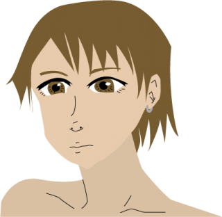

女性のイラスト。
ネットの画像を参考に、
自分で描きました。
以下は、僕の今学んでいる「デザイナーの技術」として、IllustratorやInkscapeなどで書いた「デジタル・グラフィックス」のページです。
僕がデザイナーの勉強としてIllustratorなどで描いた、自作絵です。
イラスト・作品ギャラリー - ギャラリーです。就労支援の作業所で勉強中の、イラストやデッサンの練習、詩や貼り紙のデザインなどを、ベクターグラフィックスソフトウェア（IllustratorやInkscapeなど）で行っています。
イラスト以外の作品は以下を参照のこと。
作詞・作曲した歌 - 作詞・作曲した歌です。
NoFollow・新しいプログラミング言語 - 新しいプログラミング言語。
ロボット - 人間を模した人工知能のようなプログラム。
Qiitaでロボット開発中 - Qiitaのログのコピーです。